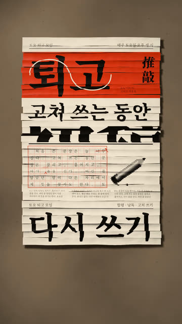
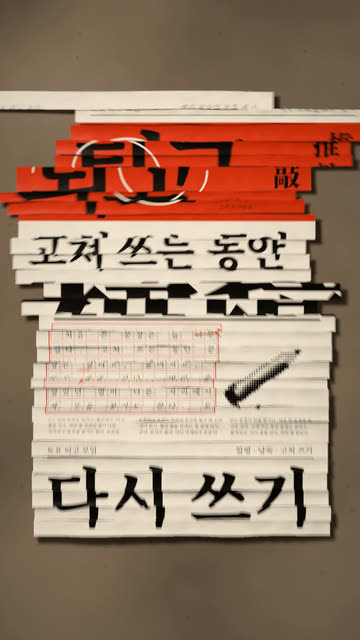
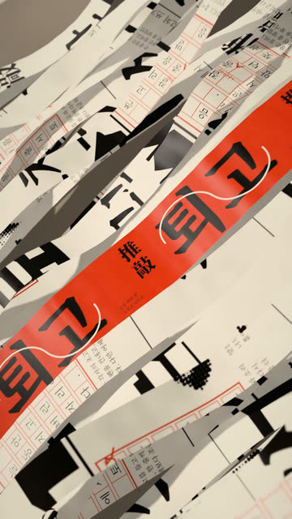
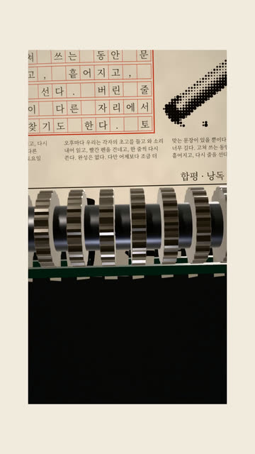
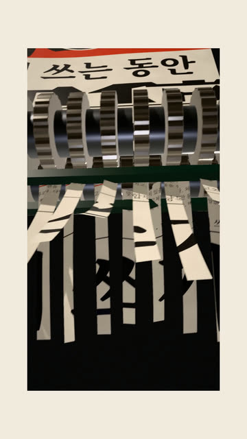
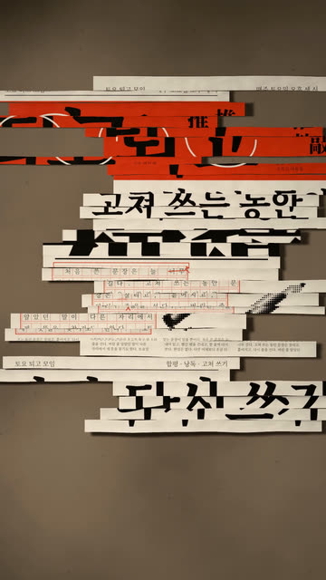

작업 흐름
- 입력
- 주제 한 줄 (행사 · 브랜드 · 모임 · 책 · 단어)과 올릴 곳
- 브리프
- 히어로 문구와 나머지 문구의 길이, 그리드 스케치, 서체, 종이 · 잉크 · 강조색, 그림, 주제의 표식, 띠 수와 착지 순서, 바닥 · 파쇄기 색 · 그레이드 · 소리 성격
- 포스터
- 레이아웃 키트(
P.fit·P.crop·P.columns·P.halftone·P.band·P.mark)와 캔버스로 직접 그리는 포스터, 몇 초 만에 나오는poster.png - 네 샷
- 훅(읽히는 첫 프레임 → 찢김 → 돌진) · 리본 캐스케이드 · 파쇄기 인셋 · 착지 파도와 이음매 없는 루프, 스틸 채점과 자동 점검
- 출력
- HTML 한 파일(라이브 재생, 누르면 소리), 1080×1920 60fps MP4, 사운드 WAV, 프레임 단위 큐 시트
node shred-poster/scripts/render.mjs shred-poster/examples/toego --poster # out/poster.png
node shred-poster/scripts/render.mjs shred-poster/examples/toego --sheet # out/sheet.jpg
node shred-poster/scripts/check.mjs shred-poster/examples/toego # 자동 점검
node shred-poster/scripts/render.mjs shred-poster/examples/toego # out/film.mp4
node shred-poster/scripts/new-film.mjs my-poster # 새 주제
node shred-poster/scripts/font.mjs add my-poster "Space Grotesk" 700요구 사항: Node 18+, Playwright Chromium, ffmpeg, 서체마다 npm 한 번. GPU 없이도 렌더됩니다(4코어 CPU에서 최종 480프레임에 약 55분, 초안은 3–4분). 단계별 순서는 SKILL.md에 있습니다.
샘플
원본은 한 가지 레이아웃(일곱 줄의 문구 칸)에 단어와 색만 바꿔 넣는 템플릿입니다. 이 스킬은 주제마다 포스터를 새로 디자인합니다. 예제 「퇴고」는 초고를 들고 와 함께 고쳐 쓰는 토요일 글쓰기 모임의 포스터로, 원고지 칸에 한 글자씩 앉힌 본문과 빨간 펜의 교정부호(자리바꿈 · 지움 · 끼움)를 그렸고, 다시 맞춰지는 순서도 가운데 문장부터 바깥으로 정했습니다. 카드를 누르면 라이브 페이지가 그 순간부터 재생됩니다.
퇴고 8초 · 네 샷 · 원고지와 교정부호
Noto Serif KR 900/400, 원고지 크림 · 먹 · 주홍 하나. 28개 띠, 나무 책상, 짙은 녹색 파쇄기, 가벼운 원고지 소리.

훅 · 0초첫 프레임완성된 포스터가 그대로 읽히는 첫 장면

훅 · 0.3초찢김과 돌진위에서부터 10ms 간격으로 찢기는 띠, 히어로 줄로 다가가는 카메라

캐스케이드 · 1.4초히어로 리본히어로 줄을 길게 자른 주홍 리본, 높이 맵 더미로 서로 뚫지 않는 리본

파쇄기 · 3.1초물림아래부터 들어가는 포스터, 칼날 원판, 포스터 종이색 바탕의 인셋

파쇄기 · 4.0초띠의 커튼칼날 밑으로 들어가 올려다본 커튼, 잘려 나오는 아래 줄

다시 맞춤 · 5.6초가운데부터가운데 문장부터 바깥으로 착지하는 파도, 착지마다 딸깍
다른 주제 스타터
같은 엔진으로 전혀 다른 주제(새벽 바다 수영 모임)를 디자인한 최소 포스터입니다. 새 포스터는 이 폴더를 복사해 시작합니다.
링크
- SKILL.md 워크플로
- 폴더 lib · scripts · references · starter · examples
- README.md 빠른 시작
- references/BRIEF.md 주제 → 브리프, 포스터와 스틸 채점 기준
- references/LOOK.md 스타일을 만드는 것 (네 샷의 시계, 편집, 종이, 빛, 소리)
- references/KIT.md 레이아웃 키트와 모든 옵션
- references/SOURCE.md 원본에서 배운 것, 가져오지 않은 것
- references/LESSONS.md 겪은 문제와 해결